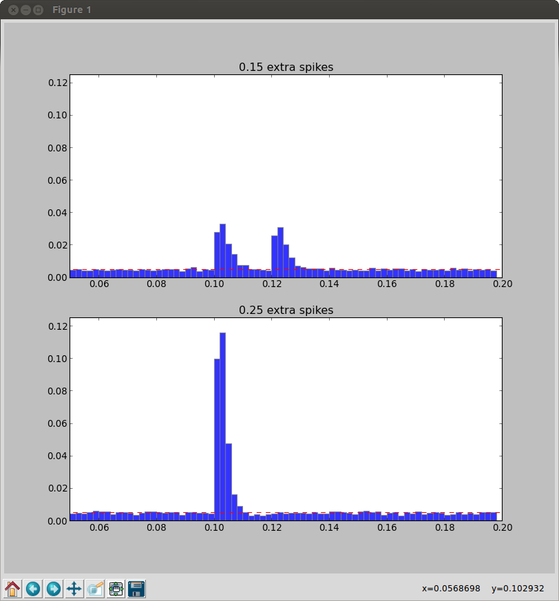

For the paper: Rossant C, Leijon S, Magnusson AK, Brette R (2011) Sensitivity of noisy neurons to coincident inputs. J Neurosci 31:17193-206 Abstract: How do neurons compute? Two main theories compete: neurons could temporally integrate noisy inputs (rate-based theories) or they could detect coincident input spikes (spike timing-based theories). Correlations at fine timescales have been observed in many areas of the nervous system, but they might have a minor impact. To address this issue, we used a probabilistic approach to quantify the impact of coincidences on neuronal response in the presence of fluctuating synaptic activity. We found that when excitation and inhibition are balanced, as in the sensory cortex in vivo, synchrony in a very small proportion of inputs results in dramatic increases in output firing rate. Our theory was experimentally validated with in vitro recordings of cortical neurons of mice. We conclude that not only are noisy neurons well equipped to detect coincidences, but they are so sensitive to fine correlations that a rate-based description of neural computation is unlikely to be accurate in general. A brian simulator model is available at this web page: http://briansimulator.org/docs/examples-frompapers_Rossant_et_al_2011.html The simulation generates images similar to Fig. 4A,B in the paper:  This simulation requires Brian which can be downloaded and installed from the instructions available at http://www.briansimulator.org/ For support on installing and using Brian simulations there is a support group at https://groups.google.com/group/briansupport.